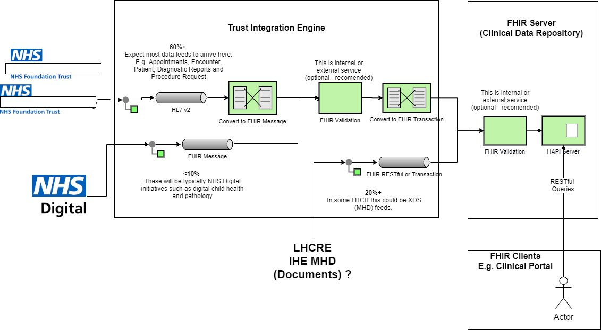

4.0.0 - CI Build
Care Connect Messaging - Local Development build (v4.0.0). See the Directory of published versions
This is a work in progres and not official guidance. It is being developed as a result of several FHIR R4 implementations and will focus on providing practical examples, missing conformance resources and notes on implementation.
The aim of this Implementation Guide is to suggest the minimal/recommended messaging capabilities of a interoperable system so that it forms part of LHCR and/or Hospital ecosystem. That is the ‘Trust Integration Engine’ in the diagram below.

For FHIR this guide builds on the conformance resources in Unofficial UK Core Implementation Guide.
NOTE: The examples in this guide are based on the HSCIC ITK HL7v2 implementation guide and official HL7 v2 to FHIR conversion guidance.
This IG does not describe a FHIR RESTful API (FHIR Clients in the diagram above). This can be found here: Care Conect API
HSCIC ITK HL7v2 pipe+hat format MUST be supported. In particular the following Messaging Subsets are to considered the minimum requirement.
HL7 UK Standard for Use of HL7 Version 2 in the UK
This is in order to support syncronisation with the Hospital Patient Administration Systems or LHCR Master Patient Index (MPI)
This SHOULD be supported although we currently have no FHIR messaging standard in the UK/CareConnect. The recommendation would be to follow the US Da Vinci Alerts project and the FHIR Message definitions in this IG will be based on this.
Support for HL7v2 will depend on system type. For Patient Administration Systems and Master Patient Index, the following MUST be supported (conversion to HSCIC standards may occur in the Trust Integration Engine).
For clinical systems such as EPR, the minimal requirement SHOULD include support for (ALL clinical encounters)
Dependent on the type of clinical information being created consideration should be given to the support of ORU^R01 message.
This SHOULD be supported although we currently have no FHIR messaging standard in the UK/CareConnect. The recommendation would be to follow the US Da Vinci Alerts project and the FHIR Message definitions in this IG will be based on this.
For systems supporting child health data. Consideration should be given to supporting Project Wildfyre Child Health Event Messages.
Many organisations and systems will require clinical information to be exchanged on document formats. The documents will most likely be in a unstrcutured format (PDF) with some systems requiring structured formats (FHIR Documents).
Systems SHOULD support MDM^T02 this should support metadata requirements of most systems and IHE XDS
The emerging standard in a number of Local Health and Care Record Exemplars (LHCR) is the IHE MHD format, the recommendation is this SHOULD be followed.
The Project Wildfyre Transfer of Care Initiative MUST be supported (when applicable) for the following letter types: